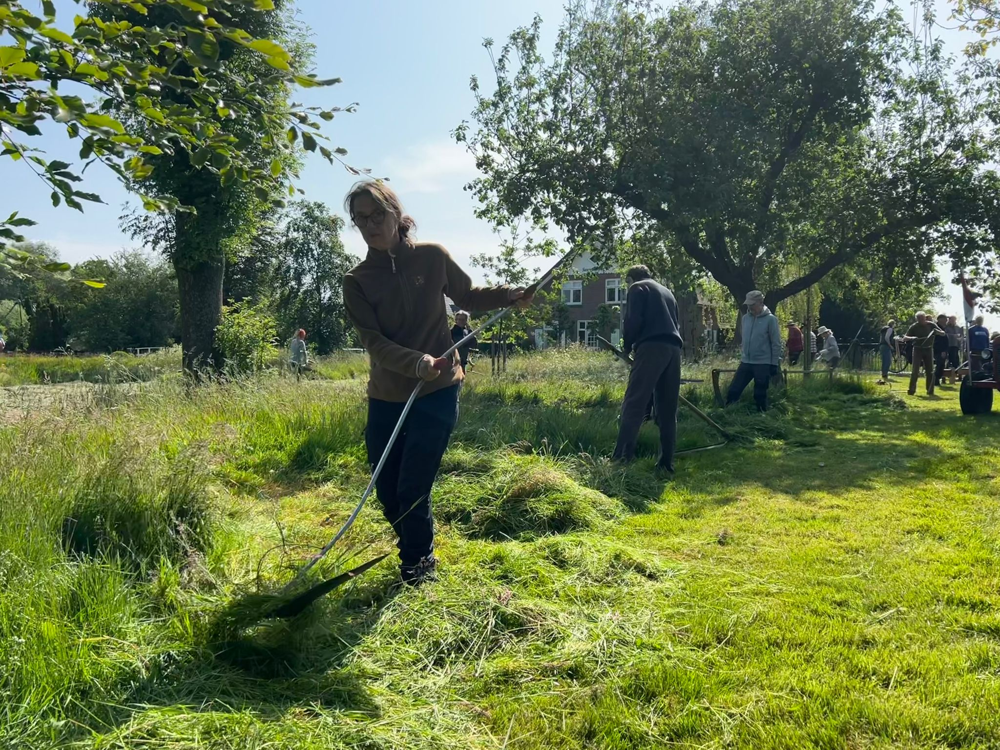
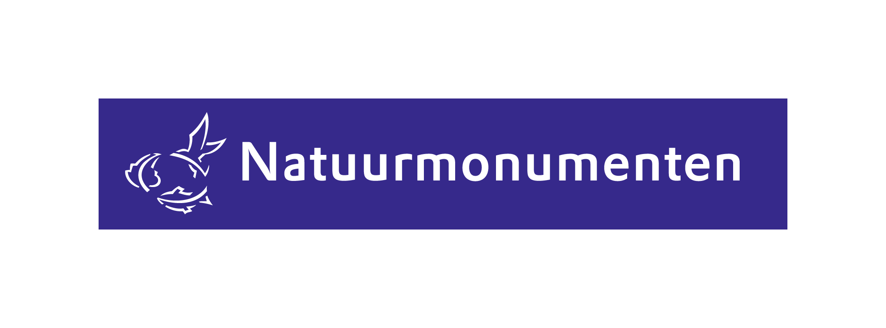
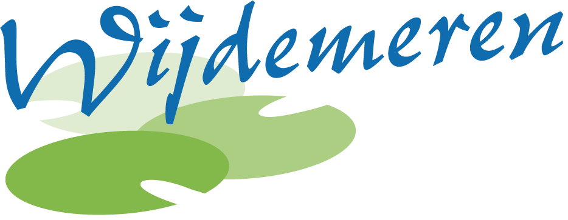

Wat we doen
Met praktische, kleinschalige projecten maken we samen een groot verschil voor de natuur in Ankeveen

Zeisbrigade 🦋🐛
In goed overleg met de gemeente onderhouden we bermen, veldjes en De Ruige Hoek met de zeis. We planten inheemse struiken en voeren het maaisel af zodat de bodem verschraalt en wilde bloemen de kans krijgen.
Meer info →
Natuurvriendelijke oevers 🐸
Bij de IJsclub, Bergse Pad en Buhrmanlaan legden we al natuurvriendelijke oevers aan met inheemse planten. Daarna onderhouden we ze door woekerende soorten uit te dunnen.
Meer info →Onderhoud Bergse Pad 🦡🦉
Nieuw in 2025! In samenwerking met Waternet en Natuurmonumenten onderhouden we het hele Bergse Pad van de Gele brug tot de Goog brug.


Huiszwaluwbescherming 🐦
Van 6 naar 25 succesvolle nesten in één jaar! Met kunstnesten en een zwaluwtil helpen we deze sympathieke trekvogeltjes.
Meer info →Aanplanten 🐝
We werken uitsluitend met inheemse planten, struiken en bomen die biologisch gekweekt zijn bij gerenommeerde kwekers.
Meer info →
Educatie 🐦🐞
We organiseren regelmatig activiteiten met de Joseph Lokin school: vogelhuisjes en insectenhotels maken, helpen met planten, en uitleg over biodiversiteit.
Meer info →